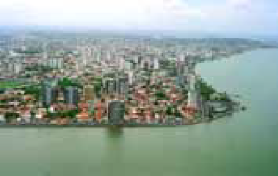
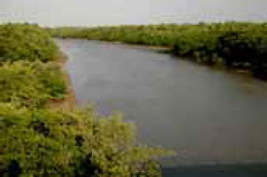

Figura I – Paisagem urbana do litoral brasileiro.

Figura II – Paisagem de manguezal do litoral
brasileiro.
Folha de S.Paulo. “Folha Turismo”, 30/10/2000, p. G-14.
Considerando as figuras I e II acima, e a relação homemnatureza
no que se refere às questões ambientais, sociais
e econômicas decorrentes da apropriação dos recursos
naturais, julgue os itens seguintes.
-
O fenômeno verificado na figura I não decorre de fato
isolado, mas de um conjunto de acontecimentos
interligados, resultantes do crescimento urbano e dos
impactos deste sobre os ecossistemas.
-
O Estatuto das Cidades (Lei Federal n.o 10.257, de 10
de julho de 2001) prevê a desocupação urbana de
áreas de preservação permanentes, como a
representada na figura II, previstas pela legislação de
zoneamento ambiental.
-
Os manguezais, áreas especiais frágeis, são
considerados de proteção permanente desde a
aprovação do Código Florestal brasileiro.
-
Os manguezais, que se estendem da foz do rio
Amazonas até o delta do rio Parnaíba (PI), têm recebido
monitoramento dos órgãos federais e estaduais
competentes, que asseguram os limites de ocupação
dessas áreas pela urbanização.
Assinale a opção correta.
-
Apenas um item está certo.
-
Apenas os itens I e II estão certos.
-
Apenas os itens I e III estão certos.
-
Apenas os itens II e III estão certos.
-
Todos os itens estão certos.